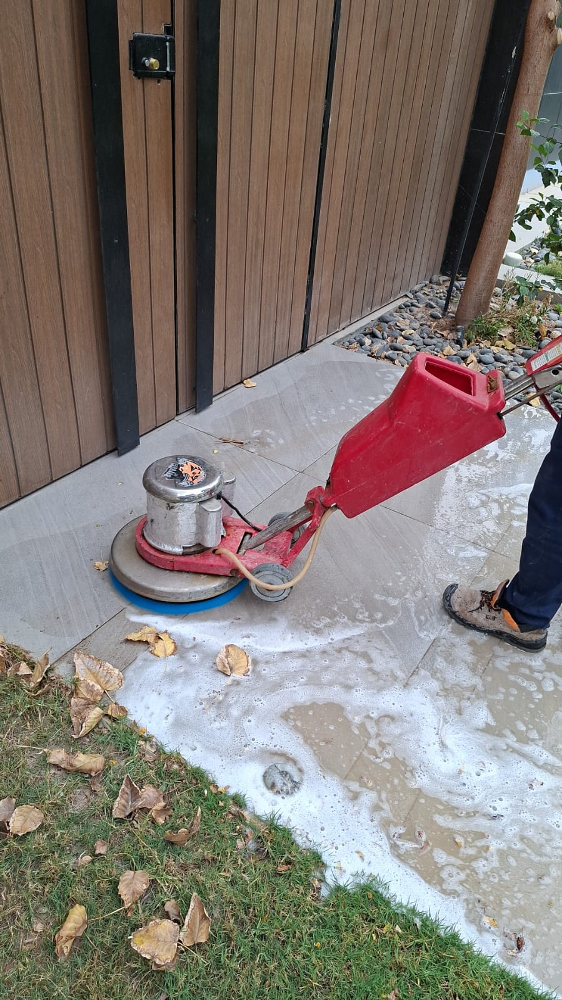
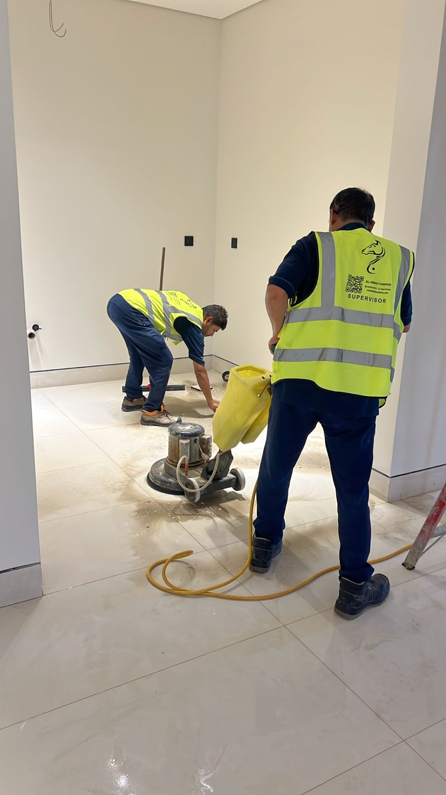
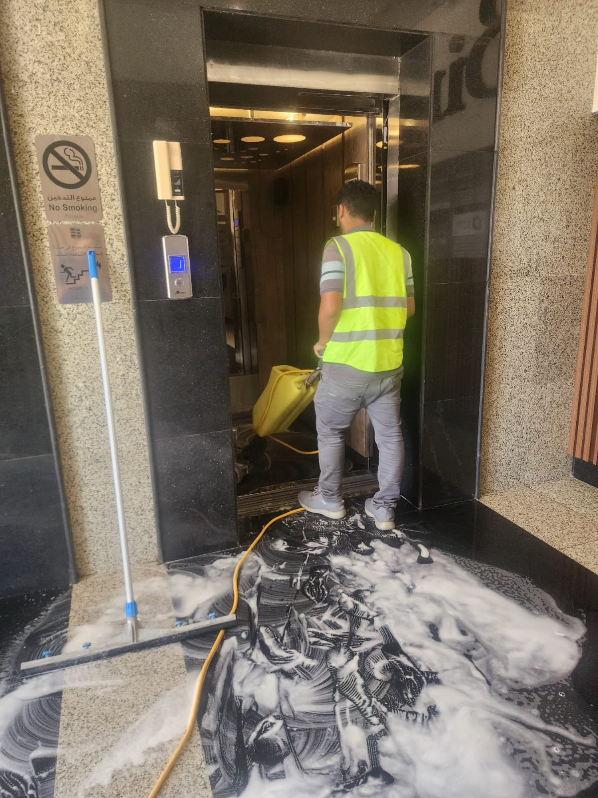

يعد الرخام والبلاط من أهم عناصر التشطيب التي تضيف لمسة جمالية وفخامة للمنازل والشركات والفلل والقصور، ولكن مع مرور الوقت وكثرة الاستخدام تبدأ الأرضيات في فقدان لمعانها الطبيعي وتظهر عليها الخدوش والبقع وآثار الحركة اليومية. وهنا تظهر الحاجة إلى الاستعانة بشركة جلي بلاط بالرياض تمتلك الخبرة والمعدات الحديثة القادرة على إعادة الأرضيات إلى مظهرها الأصلي.
ومع التطور الكبير الذي تشهده مدينة الرياض وارتفاع مستوى التشطيبات الحديثة، أصبح الطلب متزايداً على خدمات جلي بلاط بالرياض وعمليات إعادة التلميع والصقل الاحترافي التي تساعد في استعادة جمال الأرضيات دون الحاجة إلى استبدالها.
ومن هنا تقدم شركة حلول وتميز للتنظيف بالرياض خدمات متخصصة في جلي وتلميع الرخام والبلاط باستخدام أحدث الأجهزة والتقنيات الحديثة التي تحقق نتائج احترافية.
كما توفر شركة حلول وتميز لخدمات التنظيف حلولاً متكاملة تناسب المنازل والفلل والشركات والمكاتب والفنادق والمساجد والمجمعات التجارية.
ويعتمد فريق حلول وتميز للتنظيف على خبرة طويلة في مجال معالجة الأرضيات وجلي الرخام والبلاط بمختلف أنواعه.

فريق حلول وتميز أثناء تنفيذ أعمال جلي البلاط في أحد المشاريع بالرياض
ما هي خدمة جلي البلاط والرخام؟
يقصد بخدمة الجلي إزالة الطبقات السطحية التالفة والبقع والخدوش وآثار الاستخدام من الأرضيات بهدف إعادة اللمعان الطبيعي لها.
وتساعد خدمات شركة جلي بلاط بالرياض على تحسين مظهر الأرضيات بشكل كبير مقارنة بالتنظيف التقليدي.
كما تساهم عمليات جلي بلاط بالرياض في:
- إزالة الخدوش السطحية
- إزالة البقع القديمة
- استعادة اللمعان
- تحسين المظهر العام
- زيادة العمر الافتراضي للأرضيات
ولهذا يعتمد الكثير من العملاء على شركة حلول وتميز لخدمات التنظيف للحصول على نتائج احترافية تدوم لفترات طويلة.
لماذا يحتاج الرخام والبلاط إلى الجلي بشكل دوري؟
يعتقد البعض أن التنظيف العادي يكفي للحفاظ على الأرضيات، لكن الحقيقة أن الرخام والبلاط يتعرضان لعوامل عديدة تؤثر على مظهرهما مع مرور الوقت.
ولهذا تنصح شركة جلي رخام بالرياض بتنفيذ أعمال الجلي بصورة دورية.
كثرة الاستخدام اليومي
تتعرض الأرضيات للاحتكاك المستمر مما يؤدي إلى ظهور الخدوش.
تراكم البقع
بعض البقع يصعب إزالتها بوسائل التنظيف التقليدية.
فقدان اللمعان
يبدأ الرخام والبلاط بفقدان بريقهما الطبيعي مع مرور الوقت.
العوامل البيئية
الغبار والرطوبة وبعض المواد الكيميائية قد تؤثر على الأرضيات.
ولهذا تساعد خدمات جلي رخام بالرياض في إعادة الأرضيات إلى أفضل حالة ممكنة.
شركة جلي بلاط بالرياض للمنازل والشقق
تعتبر المنازل والشقق من أكثر الأماكن التي تحتاج إلى خدمات الجلي بشكل دوري. ولهذا توفر شركة جلي بلاط بالرياض خدمات متخصصة لجميع أنواع البلاط المستخدم في المنازل. وتشمل الخدمة:
- جلي البلاط
- إزالة البقع
- إزالة آثار الدهانات
- تلميع البلاط
- إعادة اللمعان
كما تساعد عمليات جلي بلاط بالرياض على تحسين المظهر العام للمنزل ورفع قيمته الجمالية. وتحرص شركة حلول وتميز للتنظيف بالرياض على استخدام معدات حديثة تحقق أفضل النتائج دون الإضرار بالأرضيات.
شركة جلي رخام بالرياض بأحدث المعدات
يحتاج الرخام إلى خبرة خاصة أثناء الجلي والتلميع بسبب طبيعته الحساسة مقارنة ببعض أنواع الأرضيات الأخرى. ولهذا توفر شركة جلي رخام بالرياض حلولاً متخصصة تناسب جميع أنواع الرخام. وتشمل الخدمات:
- جلي الرخام
- إزالة الخدوش
- صقل الرخام
- إعادة اللمعان
- معالجة البقع
كما تعتمد شركة حلول وتميز لخدمات التنظيف على تقنيات حديثة تضمن المحافظة على جودة الرخام. وتساعد خدمات جلي رخام بالرياض في استعادة المظهر الفاخر للأرضيات.
أنواع الرخام التي نقوم بجليها
تمتلك شركة حلول وتميز للتنظيف بالرياض خبرة في التعامل مع العديد من أنواع الرخام. ومن أشهرها:
الرخام الإيطالي
يعتبر من أفخم أنواع الرخام ويحتاج إلى عناية خاصة ومعدات دقيقة
الرخام الطبيعي
من أكثر الأنواع استخداماً في المنازل والفلل بالرياض
الرخام الصناعي
يستخدم في العديد من المشاريع الحديثة ويحتاج أسلوباً خاصاً
الرخام التركي
يمتاز بمظهره الجميل وتعدد ألوانه ويتطلب عناية دقيقة
أنواع البلاط التي نخدمها
لا تقتصر خدمات شركة جلي بلاط بالرياض على نوع واحد فقط من البلاط، بل تشمل:
- السيراميك
- البورسلان
- الجرانيت
- البلاط العادي
- البلاط التجاري
- البلاط المستخدم في المكاتب
وتساعد عمليات جلي بلاط بالرياض على إعادة الحيوية لهذه الأرضيات مهما كان نوعها.


جلي الرخام الإيطالي والطبيعي بالرياض
يحتاج الرخام الإيطالي والطبيعي إلى خبرة ومعدات متخصصة للحفاظ على قيمته الجمالية. ولهذا تعتمد الكثير من الفلل والقصور على شركة جلي رخام بالرياض لتنفيذ أعمال الجلي والصقل. وتساعد خدمات جلي رخام بالرياض في:
- إزالة الخدوش
- معالجة البقع
- استعادة اللمعان
- تحسين المظهر العام
كما تضمن شركة حلول وتميز لخدمات التنظيف تنفيذ الأعمال بأعلى درجات الدقة والاحترافية.
إزالة خدوش الرخام واستعادة بريقه
من أكثر المشكلات التي يشتكي منها أصحاب المنازل ظهور الخدوش على الرخام. ولهذا تقدم شركة جلي رخام بالرياض خدمات إزالة الخدوش باستخدام معدات متطورة. وتساعد هذه العمليات على:
- تحسين شكل الرخام
- إزالة العلامات الظاهرة
- استعادة اللمعان
- المحافظة على جودة الأرضية
كما تعتمد شركة حلول وتميز للتنظيف بالرياض على مراحل عمل مدروسة تحقق نتائج مميزة.
الفرق بين الرخام قبل الجلي وبعد الجلي
يلاحظ العملاء فرقاً كبيراً بعد تنفيذ خدمات الجلي:
| قبل الجلي | بعد الجلي |
|---|---|
| بهتان واضح | لمعان قوي |
| خدوش متعددة | سطح أكثر نعومة |
| بقع ظاهرة | مظهر أنظف |
| مظهر قديم | مظهر متجدد |
ولهذا يفضل الكثير من العملاء الاستعانة بشركة جلي بلاط بالرياض وشركة جلي رخام بالرياض بدلاً من التفكير في تغيير الأرضيات بالكامل.
متى يحتاج الرخام أو البلاط إلى الجلي؟
هناك علامات واضحة تدل على الحاجة إلى الجلي ومنها:
- فقدان اللمعان
- ظهور الخدوش
- وجود بقع صعبة
- تغير لون الأرضية
- آثار الاستخدام المكثف
وعند ظهور هذه العلامات يُنصح بطلب خدمة جلي بلاط بالرياض أو جلي رخام بالرياض للحصول على أفضل النتائج.
لماذا يختار العملاء شركة حلول وتميز للتنظيف بالرياض؟
خبرة طويلة — معدات حديثة — أسعار مناسبة — التزام بالمواعيد — عمالة مدربة — ضمان على الخدمة — تغطية جميع أحياء الرياض.
كما تواصل شركة حلول وتميز لخدمات التنظيف تطوير خدماتها لتلبية احتياجات العملاء المختلفة. ويعمل فريق حلول وتميز للتنظيف على تقديم حلول احترافية تساعد في إعادة الأرضيات إلى أفضل صورة ممكنة.
شركة تلميع رخام بالرياض لإعادة الفخامة إلى الأرضيات
بعد الانتهاء من عمليات الجلي تأتي مرحلة التلميع التي تعد من أهم المراحل للحصول على المظهر النهائي المثالي للأرضيات. ولهذا يبحث الكثير من أصحاب المنازل والمنشآت عن شركة تلميع رخام بالرياض تمتلك الخبرة الكافية لإعادة البريق الطبيعي للرخام.
وتقدم شركة حلول وتميز لخدمات التنظيف خدمات متخصصة في تلميع مختلف أنواع الرخام باستخدام معدات حديثة ومواد عالية الجودة. وتساعد خدمات تلميع رخام بالرياض في:
- استعادة اللمعان الطبيعي
- إبراز جمال الرخام
- تحسين المظهر العام
- تقليل ظهور الخدوش السطحية
- رفع القيمة الجمالية للمكان
تلميع رخام بالرياض للمنازل والقصور
تعتبر الأرضيات الرخامية من أبرز عناصر الفخامة داخل المنازل والقصور، ولذلك فإن المحافظة على بريقها أمر ضروري. وتوفر شركة تلميع رخام بالرياض حلولاً مناسبة لمختلف المساحات. وتشمل الخدمة:
- تلميع الصالات
- تلميع المجالس
- تلميع المداخل
- تلميع الممرات
- تلميع السلالم الرخامية
كما تساعد عمليات تلميع رخام بالرياض على تحسين الإضاءة الداخلية وإبراز جمال التصميمات المعمارية. وتحرص شركة حلول وتميز لخدمات التنظيف على تنفيذ الأعمال وفق أعلى معايير الجودة.
شركة جلي وتلميع بلاط بالرياض لجميع أنواع الأرضيات
لا يقتصر الأمر على الرخام فقط، بل تحتاج أنواع البلاط المختلفة إلى العناية الدورية للحفاظ على شكلها الجمالي. ولهذا توفر شركة جلي وتلميع بلاط بالرياض خدمات متكاملة تشمل الجلي والتلميع والمعالجة. وتشمل الأعمال:
- جلي البلاط
- تلميع البلاط
- إزالة البقع
- إزالة آثار التشطيب
- استعادة اللمعان
وتساعد خدمات جلي وتلميع البلاط بالرياض على إعادة الحيوية للأرضيات القديمة دون الحاجة إلى تغييرها. كما تعتمد شركة حلول وتميز للتنظيف بالرياض على معدات حديثة تحقق نتائج واضحة من أول زيارة.
جلي وتلميع البلاط بالرياض للمنازل الحديثة
يعتبر البلاط من أكثر أنواع الأرضيات استخداماً في المنازل الحديثة. ومع كثرة الاستخدام تظهر الحاجة إلى خدمات جلي وتلميع البلاط بالرياض للحفاظ على المظهر الجمالي للأرضيات. ومن أهم مزايا الخدمة:
- إزالة البهتان
- استعادة اللون الطبيعي
- زيادة اللمعان
- تحسين النظافة العامة
كما تساعد شركة جلي وتلميع بلاط بالرياض في إطالة العمر الافتراضي للأرضيات.
جلي أرضيات المنازل بالرياض
تتعرض أرضيات المنازل للكثير من العوامل اليومية التي تؤثر على مظهرها. ولهذا تقدم شركة جلي بلاط بالرياض خدمات متخصصة في جلي أرضيات المنازل. وتشمل:
- أرضيات الصالات
- أرضيات غرف النوم
- أرضيات المجالس
- أرضيات الممرات
- أرضيات المطابخ
وتساعد خدمات جلي بلاط بالرياض على إعادة الأرضيات إلى حالة أقرب ما تكون إلى حالتها الأصلية. كما توفر شركة حلول وتميز لخدمات التنظيف حلولاً تناسب مختلف أنواع الأرضيات المنزلية.
جلي أرضيات الشركات والمكاتب بالرياض
المكاتب والشركات تحتاج إلى أرضيات نظيفة ولامعة تعكس صورة احترافية أمام العملاء والموظفين. ولهذا توفر شركة جلي رخام بالرياض خدمات جلي وصيانة الأرضيات التجارية. وتساعد خدمات جلي رخام بالرياض وجلي وتلميع البلاط بالرياض في:
- تحسين المظهر العام
- تعزيز صورة المنشأة
- رفع مستوى النظافة
- المحافظة على الأرضيات
كما تعتمد شركة حلول وتميز للتنظيف بالرياض على جداول عمل مرنة تناسب أوقات الشركات المختلفة.
فوائد الجلي الدوري للأرضيات
ينصح الخبراء بتنفيذ الجلي بصورة دورية بدلاً من الانتظار حتى تتدهور حالة الأرضيات. ومن أهم الفوائد:
المحافظة على اللمعان
يساعد الجلي المنتظم في الحفاظ على الشكل الجمالي.
تقليل الخدوش
كلما تمت معالجة الخدوش مبكراً كانت النتائج أفضل.
إطالة العمر الافتراضي
الجلي يحافظ على جودة الأرضية لفترات أطول.
رفع قيمة العقار
الأرضيات النظيفة واللامعة تعطي انطباعاً إيجابياً عن العقار.
ولهذا يعتمد الكثير من العملاء على شركة جلي بلاط بالرياض وشركة جلي رخام بالرياض لتنفيذ برامج صيانة دورية.
أخطاء تؤدي إلى تلف الرخام
تحذر شركة حلول وتميز لخدمات التنظيف من بعض الممارسات التي قد تتسبب في تلف الرخام. ومن أبرزها:
استخدام المنظفات الحمضية
قد تؤدي إلى تآكل سطح الرخام وفقدان لمعانه.
إهمال تنظيف البقع
ترك البقع لفترات طويلة قد يجعل إزالتها أكثر صعوبة.
جر الأثاث فوق الأرضية
يسبب خدوشاً واضحة في الرخام.
استخدام معدات غير مناسبة
قد تؤدي إلى تلف السطح أو ظهور علامات دائمة.
ولهذا يفضل الاعتماد على شركة تلميع رخام بالرياض تمتلك الخبرة والمعدات اللازمة.
إعادة لمعان الرخام بالرياض
مع مرور الوقت يفقد الرخام جزءاً من لمعانه الطبيعي بسبب الاستخدام اليومي. ولهذا تساعد خدمات تلميع رخام بالرياض في استعادة البريق الأصلي للأرضية. وتشمل المزايا:
- تحسين المظهر
- زيادة الانعكاس الضوئي
- إبراز تفاصيل الرخام
- إعطاء إحساس بالفخامة
كما تعتمد شركة حلول وتميز للتنظيف بالرياض على تقنيات متطورة للحصول على نتائج تدوم لفترات طويلة.
صقل الرخام بالرياض
تعتبر عملية الصقل من المراحل المهمة التي تسبق التلميع النهائي. وتساعد في:
- إزالة الطبقات المتضررة
- تنعيم السطح
- تجهيز الأرضية للتلميع
- تحسين المظهر العام
ولهذا توفر شركة جلي رخام بالرياض خدمات صقل احترافية تناسب مختلف أنواع الرخام.
تلميع الأرضيات بالرياض للمشاريع السكنية والتجارية
سواء كنت تمتلك منزلاً أو شركة أو معرضاً تجارياً، فإن خدمات تلميع الأرضيات تساعد في تحسين المظهر العام للمكان. وتقدم شركة حلول وتميز لخدمات التنظيف خدمات متخصصة تشمل:
- تلميع الرخام
- تلميع البلاط
- تلميع الجرانيت
- تلميع الأرضيات التجارية
كما تساعد خدمات جلي وتلميع البلاط بالرياض على استعادة جمال الأرضيات وإبراز أفضل ما فيها.
جلي رخام الفنادق بالرياض بأعلى معايير الجودة
تعد الفنادق من أكثر المنشآت التي تحتاج إلى أرضيات لامعة ونظيفة بشكل دائم، لأن الأرضيات تعكس مستوى الجودة والاهتمام بالتفاصيل أمام النزلاء والزوار. ولهذا توفر شركة جلي رخام بالرياض خدمات متخصصة للفنادق بمختلف أحجامها داخل مدينة الرياض. وتشمل الخدمة:
- جلي رخام صالات الاستقبال
- جلي الممرات
- جلي أرضيات المطاعم
- جلي قاعات الاجتماعات
- تلميع الأرضيات الرخامية
وتساعد خدمات جلي رخام بالرياض على استعادة الفخامة التي تتميز بها الفنادق الراقية. كما تعتمد شركة حلول وتميز للتنظيف بالرياض على أجهزة حديثة تسمح بتنفيذ الأعمال بسرعة وكفاءة.
جلي رخام المساجد بالرياض
تحتاج المساجد إلى عناية خاصة بسبب كثافة الاستخدام اليومي. ولهذا تقدم شركة جلي رخام بالرياض خدمات احترافية للمساجد الكبيرة والصغيرة. وتشمل الأعمال:
- جلي أرضيات المصليات
- تلميع الممرات
- إزالة البقع
- معالجة آثار الاستخدام الطويل
كما تساعد خدمات تلميع رخام بالرياض في الحفاظ على المظهر الجميل للمسجد وتحسين مستوى النظافة العامة. وتحرص شركة حلول وتميز لخدمات التنظيف على استخدام مواد مناسبة تحافظ على الرخام وتضمن أفضل النتائج.
جلي رخام القصور والفلل الفاخرة
تعتمد القصور والفلل الفاخرة بشكل كبير على الرخام الطبيعي والإيطالي في الأرضيات. ولهذا توفر شركة تلميع رخام بالرياض حلولاً متخصصة تناسب هذه الفئة من المشاريع. وتساعد خدمات تلميع رخام بالرياض على:
- استعادة اللمعان
- إبراز تفاصيل الرخام
- إزالة آثار الاستخدام
- رفع القيمة الجمالية للعقار
كما تمتلك شركة حلول وتميز للتنظيف بالرياض خبرة واسعة في التعامل مع المشاريع السكنية الراقية.
جلي أرضيات المجمعات التجارية بالرياض
المجمعات التجارية تحتاج إلى أرضيات نظيفة ولامعة بشكل مستمر بسبب الأعداد الكبيرة من الزوار. ولهذا تقدم شركة جلي وتلميع بلاط بالرياض خدمات متخصصة للمجمعات التجارية. وتشمل:
- جلي البلاط
- تلميع البلاط
- معالجة البقع
- إزالة الخدوش
- استعادة اللمعان
وتساعد خدمات جلي وتلميع البلاط بالرياض على تحسين المظهر العام للمجمع التجاري وإعطاء انطباع احترافي للزوار.
إزالة البقع المستعصية من الرخام والبلاط
تعد البقع العميقة من أكثر المشكلات التي تواجه أصحاب المنازل والشركات. ولهذا توفر شركة جلي بلاط بالرياض حلولاً متقدمة لمعالجة مختلف أنواع البقع. ومن أشهر البقع التي يتم التعامل معها:
بقع القهوة والشاي
تؤثر على مظهر الرخام إذا تركت لفترات طويلة.
بقع الزيوت
تحتاج إلى معالجة متخصصة.
بقع الدهانات
تظهر غالباً بعد أعمال التشطيب.
بقع الصدأ
تتطلب مواد خاصة لإزالتها.
وتساعد خدمات جلي بلاط بالرياض وجلي رخام بالرياض في التخلص من هذه المشكلات بصورة فعالة.
مقارنة بين تغيير الرخام وجلي الرخام
يعتقد البعض أن الحل الوحيد للأرضيات القديمة هو الاستبدال الكامل، لكن في كثير من الحالات يكون الجلي أكثر جدوى.
| المقارنة | جلي الرخام | تغيير الرخام |
|---|---|---|
| التكلفة | أقل بكثير | مرتفعة |
| الوقت | أسرع | أطول |
| الإزعاج | محدود | مرتفع |
| النتيجة | ممتازة | ممتازة |
| المحافظة على التصميم | نعم | قد تتغير |
ولهذا يفضل العديد من العملاء الاستعانة بشركة جلي رخام بالرياض قبل اتخاذ قرار الاستبدال الكامل.
أنواع البقع التي تعالجها شركة حلول وتميز
تمتلك شركة حلول وتميز لخدمات التنظيف خبرة واسعة في معالجة المشكلات المختلفة التي تؤثر على الأرضيات. ومن أبرزها:
- بقع الدهون
- بقع المشروبات
- بقع الدهانات
- آثار مواد البناء
- آثار المواد الكيميائية
- بقع الصدأ
كما تساعد خدمات شركة جلي وتلميع بلاط بالرياض على استعادة الشكل الجمالي للأرضيات بعد إزالة هذه البقع.
جلي أرضيات الشركات والمعارض التجارية
تعتمد الشركات على المظهر الاحترافي في استقبال العملاء والشركاء. ولهذا توفر شركة جلي بلاط بالرياض خدمات متخصصة للمكاتب والمعارض التجارية. وتشمل:
- جلي الرخام
- جلي البلاط
- تلميع الأرضيات
- إزالة الخدوش
- صيانة دورية
وتساعد خدمات جلي بلاط بالرياض على المحافظة على صورة المنشأة أمام الزوار. كما توفر شركة حلول وتميز للتنظيف بالرياض برامج دورية تناسب احتياجات الشركات المختلفة.
أسعار جلي البلاط بالرياض
| الخدمة | السعر التقريبي |
|---|---|
| جلي بلاط شقة صغيرة | 400 ريال |
| جلي بلاط شقة متوسطة | 700 ريال |
| جلي بلاط شقة كبيرة | 1000 ريال |
| جلي أرضيات فيلا صغيرة | 1200 ريال |
| جلي أرضيات فيلا متوسطة | 1800 ريال |
| جلي أرضيات فيلا كبيرة | 2500 ريال |
أسعار جلي الرخام بالرياض
| الخدمة | السعر التقريبي |
|---|---|
| جلي رخام مجلس | 500 ريال |
| جلي رخام صالة | 700 ريال |
| جلي رخام فيلا | 1500 ريال |
| جلي رخام قصر | حسب المساحة |
| جلي رخام فندق | حسب المعاينة |
| جلي رخام مسجد | حسب المساحة |
أسعار تلميع الرخام بالرياض
| الخدمة | السعر التقريبي |
|---|---|
| تلميع رخام مجلس | 300 ريال |
| تلميع رخام صالة | 400 ريال |
| تلميع رخام فيلا | 900 ريال |
| تلميع رخام شركة | 700 ريال |
| تلميع رخام فندق | حسب المساحة |
أسعار جلي وتلميع البلاط بالرياض
| الخدمة | السعر التقريبي |
|---|---|
| جلي وتلميع بلاط شقة | 800 ريال |
| جلي وتلميع بلاط فيلا | 1800 ريال |
| جلي وتلميع بلاط شركة | 1200 ريال |
| جلي وتلميع بلاط معرض | 1500 ريال |
وتؤكد شركة حلول وتميز للتنظيف بالرياض أن السعر النهائي يحدد بعد المعاينة الميدانية المجانية. كما تقدم الشركة عروضاً خاصة للمشاريع الكبيرة والعقود طويلة المدى.
الضمان المقدم من شركة حلول وتميز للتنظيف بالرياض
من أهم الأمور التي يبحث عنها العملاء وجود جهة تقدم خدمة احترافية مع التزام حقيقي بالجودة. ولهذا توفر شركة حلول وتميز للتنظيف بالرياض ضماناً على جودة التنفيذ والمتابعة بعد الانتهاء من العمل. ويشمل الضمان:
- متابعة مستوى الجودة
- مراجعة الأعمال عند الحاجة
- معالجة الملاحظات المتعلقة بالتنفيذ
- الحرص على تحقيق رضا العميل
- الالتزام بمعايير العمل المتفق عليها
عقود الصيانة الدورية للأرضيات
تساعد الصيانة الدورية على المحافظة على الأرضيات بحالة ممتازة لفترات طويلة. ولهذا توفر شركة جلي بلاط بالرياض عقود صيانة متنوعة.
عقد شهري
مناسب للمعارض والشركات ذات الحركة المرتفعة
عقد ربع سنوي
مناسب للمنازل الكبيرة والفلل
عقد نصف سنوي
مناسب للمباني السكنية المتوسطة
عقد سنوي
خيار اقتصادي للحفاظ على الرخام والبلاط طوال العام
تغطية جميع أحياء الرياض
شمال الرياض
شرق الرياض
غرب الرياض
جنوب الرياض
فوائد الاستثمار في جلي الأرضيات
الكثير من العملاء يركزون على الديكور والأثاث بينما تغفل أهمية الأرضيات. لكن الحقيقة أن الأرضيات النظيفة واللامعة تساعد على:
- تحسين المظهر العام
- زيادة قيمة العقار
- تعزيز الراحة النفسية
- المحافظة على التشطيبات
ولهذا أصبحت خدمات شركة جلي بلاط بالرياض وشركة جلي رخام بالرياض من الخدمات الأساسية للعديد من المنازل والشركات.
لماذا يفضل العملاء الجلي بدلاً من تغيير الأرضيات؟
تغيير الأرضيات بالكامل يعتبر مكلفاً ويحتاج إلى وقت طويل. بينما تساعد خدمات جلي بلاط بالرياض وجلي رخام بالرياض على تحقيق نتائج ممتازة بتكلفة أقل بكثير. ومن أهم المزايا:
- توفير المال
- سرعة التنفيذ
- الحفاظ على التصميم الحالي
- تقليل الإزعاج
- استعادة المظهر الجمالي
ولهذا يعتمد الكثير من العملاء على شركة جلي وتلميع بلاط بالرياض للحصول على نتائج احترافية دون الحاجة إلى أعمال ترميم كبيرة.
الأسئلة الشائعة
ما أفضل شركة جلي بلاط بالرياض؟
يعتمد اختيار أفضل شركة على الخبرة والمعدات وجودة التنفيذ. وتعد شركة حلول وتميز لخدمات التنظيف من الجهات المتخصصة في هذا المجال داخل الرياض.
هل يمكن إزالة الخدوش من الرخام؟
نعم، توفر شركة جلي رخام بالرياض خدمات إزالة الخدوش والصقل والتلميع.
كم تستغرق عملية الجلي؟
يعتمد ذلك على المساحة ونوع الأرضية، ويتم تحديد المدة بعد المعاينة.
هل يمكن جلي الرخام الإيطالي؟
نعم، تمتلك شركة تلميع رخام بالرياض الخبرة اللازمة للتعامل مع الرخام الإيطالي والطبيعي.
هل الجلي يزيل البقع القديمة؟
في كثير من الحالات تساعد خدمات جلي رخام بالرياض وجلي بلاط بالرياض على إزالة البقع وتحسين مظهر الأرضية بشكل كبير.
هل توجد عقود صيانة دورية؟
نعم، توفر شركة حلول وتميز للتنظيف بالرياض عقوداً شهرية وربع سنوية ونصف سنوية وسنوية.
هل تعملون في جميع أحياء الرياض؟
نعم، تغطي شركة حلول وتميز لخدمات التنظيف جميع مناطق وأحياء الرياض.
هل يوجد ضمان على الخدمة؟
نعم، تقدم الشركة ضماناً على جودة التنفيذ والمتابعة بعد انتهاء العمل.
هل يمكن تنفيذ الجلي للمكاتب والشركات؟
نعم، توفر شركة جلي وتلميع بلاط بالرياض خدمات مخصصة للشركات والمكاتب والمنشآت التجارية.
هل يتم توفير المعدات ومواد التنظيف؟
نعم، يتم توفير جميع الأجهزة والمواد اللازمة لتنفيذ الخدمة.
الخاتمة
إذا كنت تبحث عن افضل شركة جلي بلاط ورخام بالرياض تجمع بين الخبرة والجودة والالتزام بالمواعيد، فإن شركة حلول وتميز للتنظيف بالرياض توفر لك جميع الحلول اللازمة لاستعادة جمال الأرضيات وإعادة اللمعان الطبيعي للرخام والبلاط.
سواء كنت تحتاج إلى شركة جلي بلاط بالرياض لتنفيذ أعمال جلي الأرضيات المنزلية أو تبحث عن جلي بلاط بالرياض للمكاتب والمعارض والمنشآت التجارية، فإن فريق العمل يمتلك الخبرة والمعدات المناسبة لتحقيق أفضل النتائج.
كما تقدم شركة جلي رخام بالرياض خدمات متخصصة تشمل الجلي والصقل والمعالجة وإزالة الخدوش واستعادة البريق الطبيعي لمختلف أنواع الرخام. وتوفر كذلك شركة تلميع رخام بالرياض حلولاً احترافية تساعد على إبراز جمال الأرضيات والمحافظة عليها لفترات طويلة، مع تنفيذ خدمات تلميع رخام بالرياض وفق أعلى معايير الجودة.
وللعملاء الراغبين في الحصول على خدمة متكاملة، توفر شركة جلي وتلميع بلاط بالرياض برامج شاملة تشمل الجلي والتلميع والصيانة الدورية بما يضمن المحافظة على الأرضيات بأفضل حالة ممكنة. كما تساعد خدمات جلي وتلميع البلاط بالرياض في تحسين المظهر العام للعقار وزيادة قيمته والمحافظة على جودة التشطيبات لفترات طويلة.
وتواصل شركة حلول وتميز لخدمات التنظيف تقديم خدماتها في جميع أنحاء الرياض مع الاعتماد على أحدث الأجهزة وأفضل أساليب العمل الحديثة، بينما يواصل فريق حلول وتميز للتنظيف تنفيذ المشاريع السكنية والتجارية باحترافية عالية ونتائج ترضي العملاء وتمنح الأرضيات مظهراً جديداً يعكس الفخامة والنظافة والجودة.